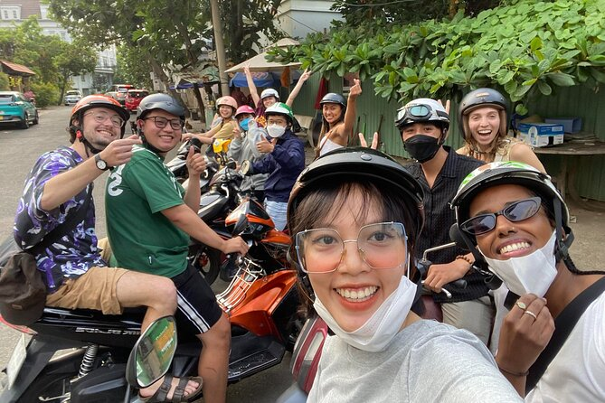
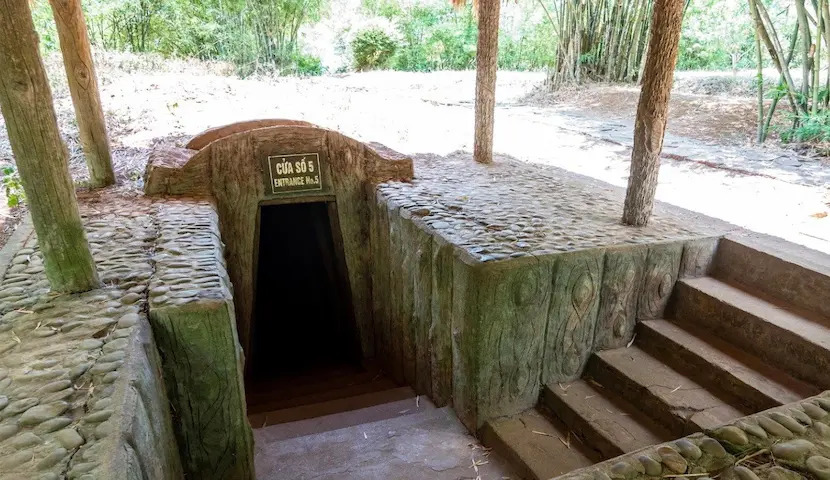

Enjoy culture and food in this vibrant strict close to the center of Saigon
Walk through iconic French-colonial streets to admire beautiful architecture, discovering historic landmarks while capturing the vibrant energy of downtown Saigon.

Ride a motorbike through narrow alleys to live like a local, tasting iconic street food while discovering hidden apartments and ancient temples.

Crawl through underground tunnels to experience wartime history, discovering hidden trapdoors while learning about the resilience of local soldiers."
"20 years of living in Saigon means I know exactly where the best food is and where the tourists don't go—let’s explore!"